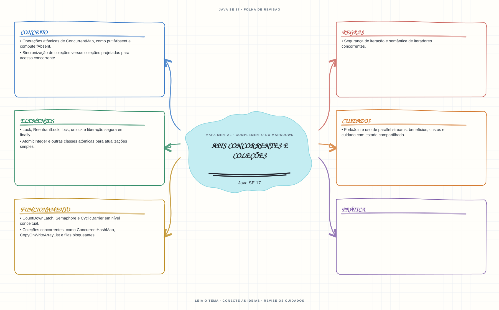

Ver mapa mental deste assuntoEscolher entre locks, atomics e coleções concorrentes, reconhecendo os limites de atomicidade.
Aprofundamento e revisão 1Z0-829: use esta página depois dos fundamentos. Os tópicos de prova complementam a trilha inicial e não são pré-requisitos para começar a programar.
- Leia o objetivo e localize a ideia principal no conteúdo abaixo.
- Preveja o resultado, compile e execute o exemplo.
- Faça a atividade sem copiar a solução e confira a checagem comentada.
EXEMPLO DE CONSOLE
Veja a regra em execução
Antes de executar, anote sua previsão. Compile o exemplo com o JDK e compare a saída observada com as regras deste assunto.
Comandos para compilar e executar
javac -d target/bin src/08-concorrencia/apis-concorrentes-e-colecoes/ApisConcorrentesECollectionsExample.java
java -cp target/bin ApisConcorrentesECollectionsExampleA execução imprime o resultado no console para você comparar com sua previsão.
Consultar código-fonte: ApisConcorrentesECollectionsExample.java
import java.util.ArrayList;
import java.util.List;
import java.util.concurrent.ConcurrentHashMap;
import java.util.concurrent.ExecutorService;
import java.util.concurrent.Executors;
import java.util.concurrent.atomic.AtomicInteger;
public class ApisConcorrentesECollectionsExample {
public static void main(String[] args) throws InterruptedException {
System.out.println("=== Colecoes concorrentes e tipos atomicos ===");
System.out.println("computeIfAbsent cria um contador por chave; incrementAndGet e atomico.");
ConcurrentHashMap<String, AtomicInteger> acessos = new ConcurrentHashMap<>();
ExecutorService executor = Executors.newFixedThreadPool(4);
List<Runnable> tarefas = new ArrayList<>();
for (int i = 0; i < 1000; i++) {
tarefas.add(() ->
acessos.computeIfAbsent("Java", chave -> new AtomicInteger()).incrementAndGet());
}
try {
for (Runnable tarefa : tarefas) {
executor.submit(tarefa);
}
} finally {
executor.shutdown();
if (!executor.awaitTermination(5, java.util.concurrent.TimeUnit.SECONDS)) {
executor.shutdownNow();
throw new IllegalStateException("As tarefas nao terminaram dentro do limite.");
}
}
System.out.println("Contagem esperada apos 1000 tarefas concorrentes: "
+ acessos.get("Java").get());
}
}
PRATIQUE AGORA
Faça uma pequena alteração por conta própria
Conte ocorrências de palavras em um ConcurrentHashMap usando merge ou computeIfAbsent.
Concluído quando: o programa compilar, produzir o resultado esperado e você conseguir explicar a regra aplicada.
CHECAGEM RÁPIDA · APIs concorrentes e coleções
ConcurrentHashMap torna atômica qualquer sequência de duas chamadas?
Conferir resposta comentada
Não. Use operações compostas próprias, como computeIfAbsent; duas chamadas separadas não viram uma transação atômica por estarem no mapa concorrente.
Estude
Lock,ReentrantLock,lock,unlocke liberação segura emfinally.AtomicIntegere outras classes atômicas para atualizações simples.- Coleções concorrentes, como
ConcurrentHashMap,CopyOnWriteArrayListe filas bloqueantes. - Operações atômicas de
ConcurrentMap, comoputIfAbsentecomputeIfAbsent. - Sincronização de coleções versus coleções projetadas para acesso concorrente.
- Segurança de iteração e semântica de iteradores concorrentes.
CountDownLatch,SemaphoreeCyclicBarrierem nível conceitual.- Fork/Join e uso de
parallelstreams: benefícios, custos e cuidado com estado compartilhado.
Prática
Compare um mapa comum protegido por lock com ConcurrentHashMap; identifique quais sequências são atômicas e quais não são.
Como este capítulo se relaciona com cada exame
Fundamentos reaproveitáveis; confira APIs disponíveis e objetivos de Java 8.
Base de estudo deste portal; confirme o mapeamento com o blueprint vigente.
Conceitos úteis; revise virtual threads e APIs Java 21 aplicáveis.
Orientação editorial sobre reaproveitamento do material; não representa objetivos oficiais nem garante cobertura do exame. Consulte o comparativo e as fontes da Oracle.